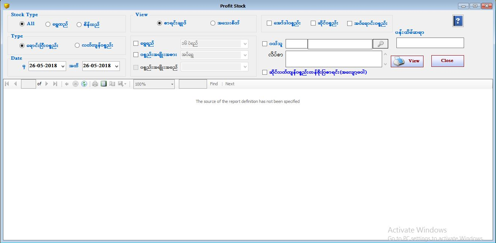

Profit Stock Report Setup

- Reports အောက်ရှိ Profit Stock Items Form ကိုဖွင့်ပါ။
- Profit Stock Items Form သည် အမြတ်စာရင်းများကို ပြန်လည်ကြည့်ရှုသော Form ဖြစ်သည်။
- Stock Type တွင် All ကို on ထားခြင်းသည် ရွှေထည်၊စိန်ထည် Stock အားလုံး၏ အမြတ်စာရင်းကို ကြည့်ရှုခြင်းဖြစ်သည်။ မိမိနှစ်သက်ရာ ရွှေထည်၊စိန်ထည်တစ်ခုချင်း၏ အမြတ်စာရင်းကိုကြည့်ရှုခြင်းဖြစ်သည်။
- Type တွင် ရောင်းပြီးပစ္စည်းကို on ထားပါက ရောင်းပြီး Stock ပစ္စည်းများ၏ အမြတ်စာရင်းကိုကြည့်ရှုနိုင်ပြီး လက်ကျန်ပစ္စည်းကို on ထားပါက လက်ကျန်ပစ္စည်းများ၏ အမြတ်စာရင်းကိုကြည့်ရှုနိုင်ပါသည်။
- အမြတ်စာရင်းများကိုကြည့်ရှုရာတွင် From Date နှင့် To Date ကိုရွေးချယ်ပေးရပါမည်။
- စာရင်းချုပ်ကို on ထားပါက ရောင်းပြီး အမြတ်စာရင်းချုပ်ကိုကြည့်ရှုနိုင်မည် ဖြစ်ပြီး အသေးစိတ်ကို on ထားပါက ရောင်းပြီးပစ္စည်းများ၏ အမြတ်စာရင်းများကို အသေးစိတ်ကြည့်ရှုနိုင်ပါမည်။
- ရွှေရည် အလိုက်ကြည့်ချင်ပါက ရွှေရည် ၏ check box ကို on ထားပေးပါ။ (သို့) ပစ္စည်းအမျိုးအစား အလိုက်ကြည့်ချင်လျှင် ပစ္စည်းအမျိုးအစား၏ check box ကို on ထားပေးပါ။ (သို့) နှစ်မျိုးလုံးကြည့်ချင်ပါက ရွှေရည် နှင့် ပစ္စည်းအမျိုးအစား နှစ်မျိုးလုံးကို on ထားပြီး Data များကိုပြန်လည်ကြည့်ရှုနိုင်ပါသည်။
- မိမိဆိုင်တွင် ပန်းထိမ်ဆရာ မှ လာတင်ရောင်းထားသော ပစ္စည်းများရှိပါက ပန်းထိမ်ဆရာ text box တွင် ပန်းထိမ်ဆရာ အမည်ကို ရိုက်ထည့်ပြီး ပန်းထိမ်ဆရာ ပစ္စည်းများကို သီးသန့်ကြည့်ရှုနိုင်ပါသည်။
- ဆိုင်လက်ကျန်ပစ္စည်းတန်ဖိုးပြစာရင်း check box ကို on ထားပြီး View Button နှိပ်ကြည့်ပါက ဆိုင်ရှိ လက်ကျန်ပစ္စည်းများ၏ ရွှေရည်အလိုက် အလျော့တွက်မပါသော ရွှေတန်ဖိုး၊ ကျောက်တန်ဖိုး၊ စုစုပေါင်းတန်ဖိုး တို့ကိုတွေ့ရမည် ဖြစ်သည်။
- Profit Stock Items အား အသုံးပြုပြီးပါက Close Button ကိုနှိပ်၍ ပိတ်နိုင်ပါသည်။